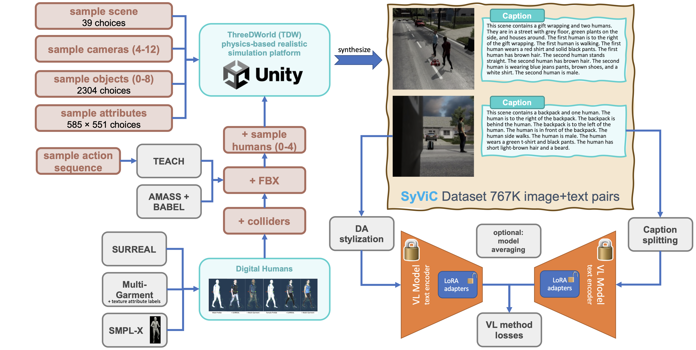
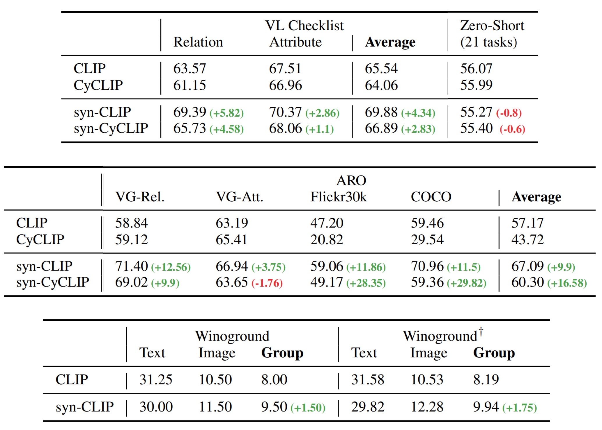

Large-scale pre-trained Vision & Language (VL) models have shown remarkable performance in many applications, enabling replacing a fixed set of supported classes with zero-shot open vocabulary reasoning over (almost arbitrary) natural language prompts. However, recent works have uncovered a fundamental weakness of these models. For example, their difficulty to understand Visual Language Concepts (VLC) that go 'beyond nouns' such as the meaning of non-object words (e.g., attributes, actions, relations, states, etc.), or difficulty in performing compositional reasoning such as understanding the significance of the order of the words in a sentence. In this work, we investigate to which extent purely synthetic data could be leveraged to teach these models to overcome such shortcomings without compromising their zero-shot capabilities. We contribute Synthetic Visual Concepts (SyViC) - a million-scale synthetic dataset and data generation codebase allowing to generate additional suitable data to improve VLC understanding and compositional reasoning of VL models. Additionally, we propose a general VL finetuning strategy for effectively leveraging SyViC towards achieving these improvements. Our extensive experiments and ablations on VL-Checklist, Winoground, and ARO benchmarks demonstrate that it is possible to adapt strong pre-trained VL models with synthetic data significantly enhancing their VLC understanding (e.g. by 9.9% on ARO and 4.3% on VL-Checklist) with under 1% drop in their zero-shot accuracy.


@misc{cascantebonilla2023going,
title={Going Beyond Nouns With Vision & Language Models Using Synthetic Data},
author={Paola Cascante-Bonilla, Khaled Shehada, James Seale Smith, Sivan Doveh, Donghyun Kim, Rameswar Panda, Gül Varol, Aude Oliva, Vicente Ordonez, Rogerio Feris, Leonid Karlinsky},
year={2023},
eprint={2303.17590},
archivePrefix={arXiv},
primaryClass={cs.CV} }